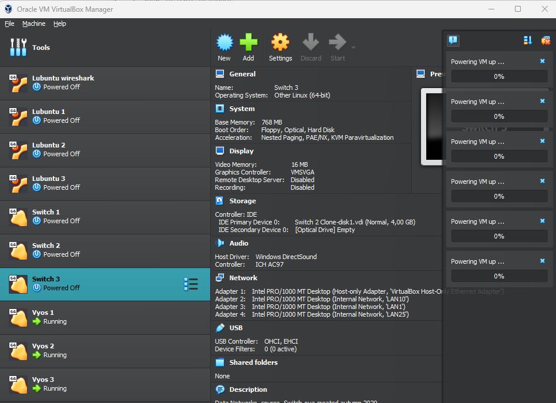

Akseli Larikka
Network engineer
(in progress)
Opiskelija, liikkuja, reserviläinen
Profiili

Olen toisen vuoden insinööriopiskelija Jyväskylän ammattikorkeakoulun IT-instituutissa, Tieto- ja viestintätekniikan alalla.
Lue lisää
Projektit
Opiskelujeni edetessä osana kurssien suorittamista tulee usein tehdä jonkinlainen harjoitustyö. Koostaan niistä omalle sivulleen lyhyet esitelmät ja tärkeimmät opit.
Lue lisää
Portfolio

Kokoan tälle sivulle kollaasin saamastani työkokemuksesta ja koulutuksesta.